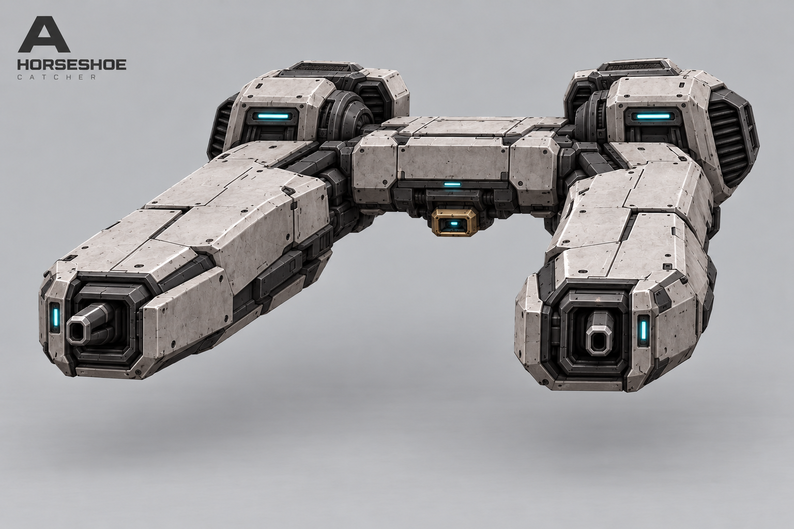
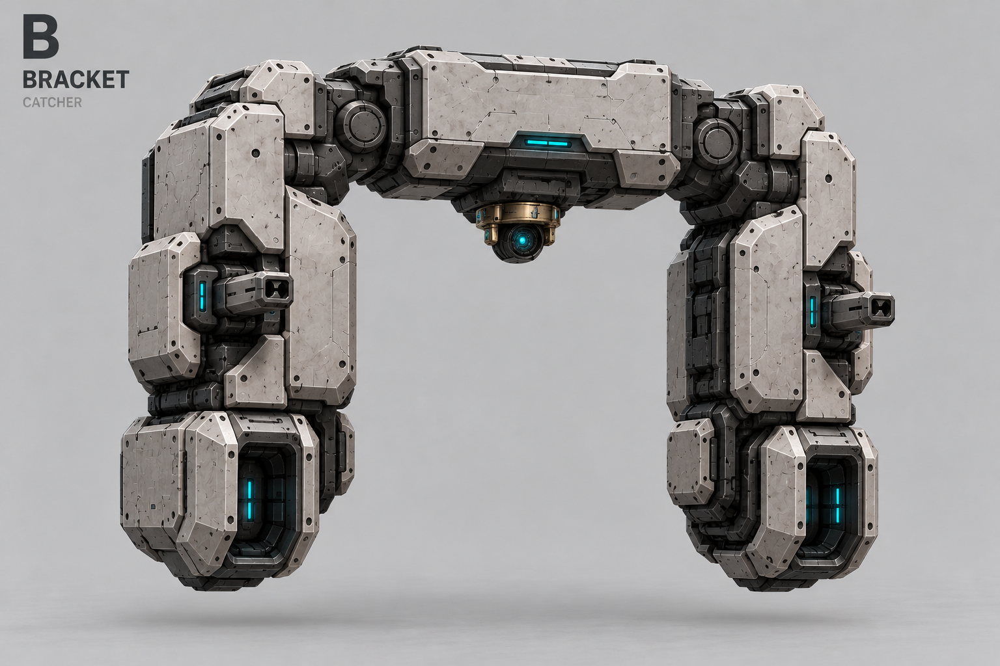
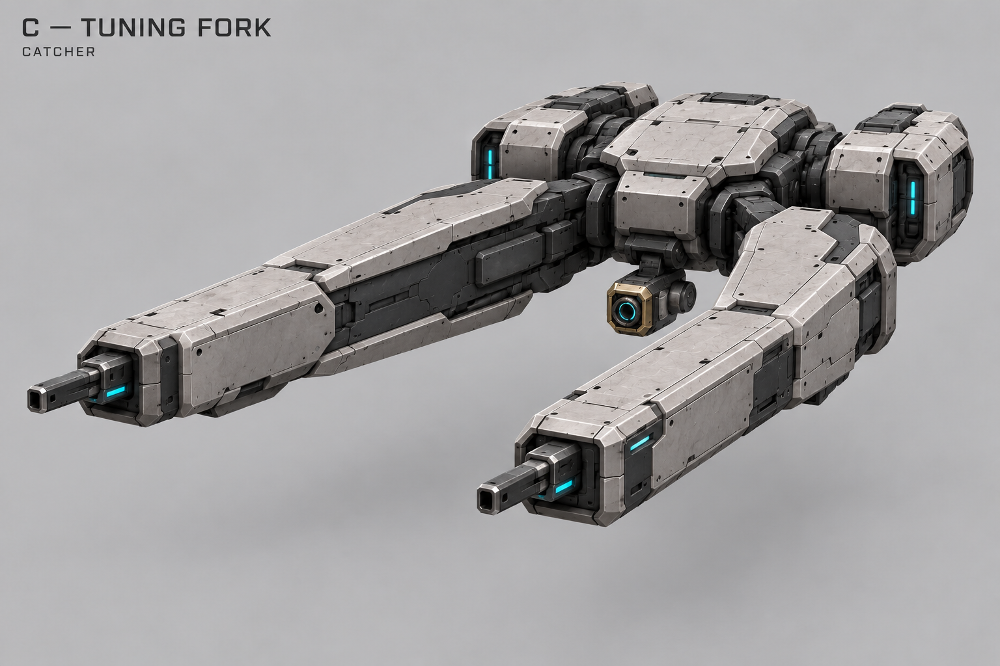
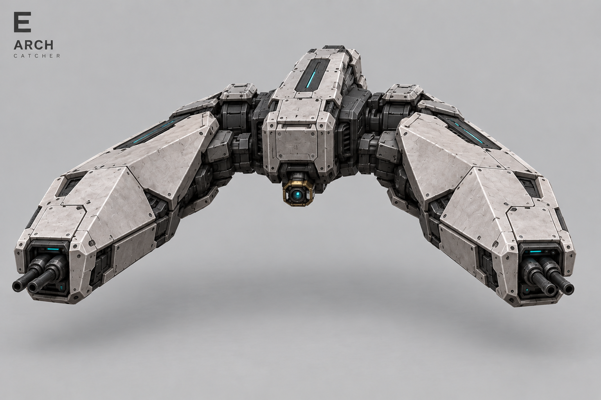
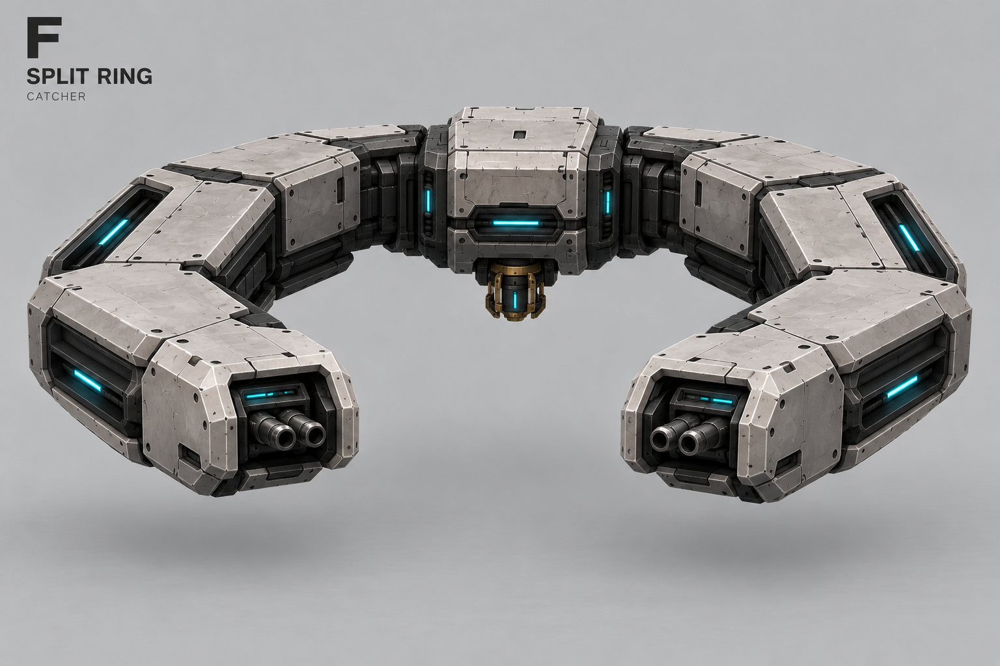

A — Подкова

Тяжёлый воздушный перехватчик. Основное оружие ПВО и отдельный нижний проектор зацепа. Один ракурс каждого варианта; корпус C выбран, оружие уточняется.



Орудия направлены друг на друга. Лист сохранён в Old.

